扉页
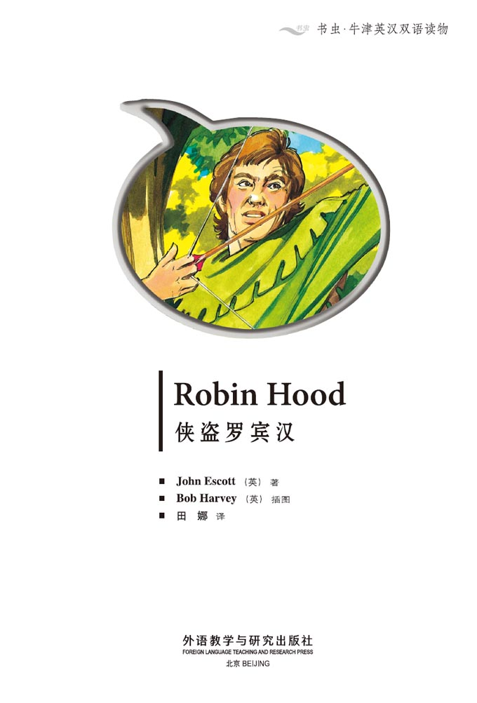
Copyright
Copyright © Foreign Language Teaching and Research Press 2006
All rights reserved. No part of this publication may be reproduced or distributed by any means, or stored in a database or retrieval system, without the prior written permission of Foreign Language Teaching and Research Press.
本书版权由外语教学与研究出版社独家所有。如未获得该社书面同意，书中任何部分之文字及图片，不得用任何方式抄袭、节录、翻印或存储利用于任何数据库及检索系统等。
Published by Foreign Language Teaching and Research Press
No. 19 Xisanhuan Beilu
Beijing, China 100089
http://www.fltrp.com
版权页
京权图字01-2006-2800
Originally published by Oxford University Press, Great Clarendon Street, Oxford. © 2001 This edition is licensed for sale in the People's Republic of China only and not for export therefrom.
'Oxford' is a registered trademark of Oxford University Press.
图书在版编目（CIP）数据
侠盗罗宾汉／（英）埃斯科特（Escott, J.）著．—北京：外语教学与研究出版社，2006.5（2013.11重印）
（书虫·牛津英汉双语读物）
书名原文：Robin Hood
ISBN 978-7-5600-5452-0
Ⅰ．侠… Ⅱ．埃… Ⅲ．英语—语言读物 Ⅳ．H319.4
中国版本图书馆CIP数据核字（2006）第023259号
出版人：蔡剑峰
责任编辑：余 军
封面设计：孙莉明
出版发行：外语教学与研究出版社
社 址：北京市西三环北路19号（100089）
网 址：http://www.fltrp.com
书 号：ISBN 978-7-5600-5452-0
* * *
制售盗版必究 举报查实奖励
版权保护举报电话：(010)88817519
目录
Robin Hood
ACTIVITIES Before Reading
ACTIVITIES
Before Reading
1. Look at the front cover and choose the correct answer for these questions.
1) When do you think this story happens?
a Today.
b In the past.
c In a time that is to come.
2) Where do you think this story happens?
a In America.
b In England.
c In Japan.
d In Australia.
2. Read the back cover of the book and answer these questions.
1) Do you think Prince John is a good man or bad man?
2) Do you think Robin Hood is a good man or bad man?
3) Where do Robin Hood and his men live?
ACTIVITIES While Reading
ACTIVITIES
While Reading
1. Answer these questions.
1) What do the people call Richard, the King of England?
2) Where is Robin's house?
3) The Sheriff of Nottingham tells his soldiers to bring Robin to the castle. How does Robin hear about this?
4) Why can't Robin marry Lady Marian?
2. Who says or thinks these words?
1) 'We must take money from Prince John's bad men.'
2) 'Wait for me to come across!'
3) 'This is Robin Hood!'
4) 'Wake up! I want you to carry me across the river.'
5) 'Now you can carry me—across the river again!'
3. Answer these questions.
1) Who is 'a good friend of Lady Marian Fitzwalter'?
2) Why is this friend hiding from the Sheriff?
3) Why is the boy hunting in the forest?
4) What do the soldiers say is to happen to the boy the next day?
5) Who is the 'woman' carrying eggs?
6) Who tells the boy to run to the forest?
4. Are these sentences true (T) or false (F)?
1) The winner of the shooting contest gets a gold arrow.
2) The Sheriff wants to catch Friar Tuck.
3) Robin wants to win the contest for the people of Nottingham.
4) Forty men shoot in the contest.
5) Sir Guy Gisborne wins the contest.
5. Can you guess what happens to these characters?
Robin
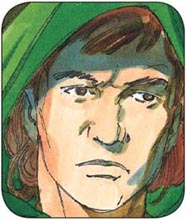
A He kills Sir Guy Gisborne.
B He marries Lady Marian.
C He leaves the forest and goes back to his home.
Sir Guy Gisborne
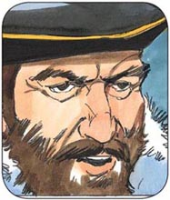
A He marries Lady Marian.
B He catches all of Robin's men.
C He leaves England.
Prince John
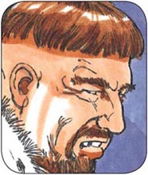
A He marries Lady Marian.
B He kills Robin.
C He becomes king.
Lady Marian
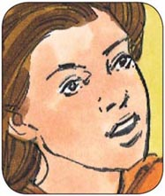
A She comes to live in the forest with Robin.
B She marries Prince John to help Robin.
C She leaves England.
ACTIVITIES After Reading
ACTIVITIES
After Reading
1. Use these words to join the sentences together.
but gets from in and
1) King Richard is a good man. The people love him.
2) The soldiers come after Robin. He hides from them in the forest.
3) The Sheriff and Sir Guy look down. A castle window.
4) The shooting contest winner. A silver arrow.
5) The men hit their targets. The centre.
2. Complete this summary of the story. Use these words:
taxes kill outlaw marry forest brother friends money hide hungry
King Richard the First goes away. His ________ is Prince John. Prince John wants the people to pay more ________. Robin of Locksley is going to ________ Lady Marian, but somebody tells him, 'They want to ________ you. You must ________!' So Robin goes to Sherwood Forest. Now he is an ________. There are more men hiding in the forest. They and Robin take ________ from Prince John's bad men. They wait in the ________, then stop rich people and say, 'We want money for the ________ people.' They want King Richard to know that they are his true ________.
3. Look at each picture, then answer the questions after it.
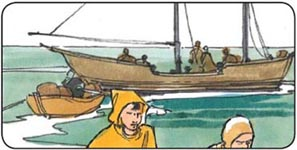
1) Who is getting into the boat?
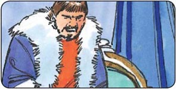
2) Who is this?
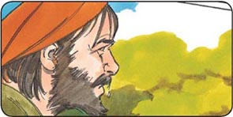
3) Who is this and what is happening?
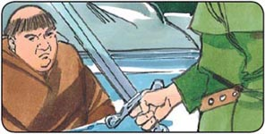
4) Who is sitting in the water?
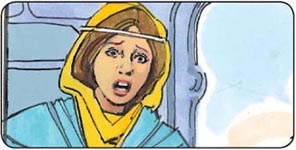
5) Who is this?
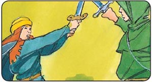
6) Who are these two people?
参考译文
参考译文
Robin Hood
侠盗罗宾汉
Richard the First is King of England. He is a brave, good man, and the people love him. They call him Richard the Lionheart.
But when the King goes away, his brother Prince John does his work…
Sheriff of Nottingham, the people must pay more taxes!
But Prince John, some of them can't pay.
Then take their houses and animals away from them!
理查一世是英格兰国王。他是一个勇敢的好人，人民都爱戴他。他们称他为“狮心王理查”。
可国王离开之后，他的兄弟约翰亲王接管了他的工作……
诺丁汉郡长，百姓必须交更多的税！
可是有些人根本交不起，约翰亲王。
那么就没收他们的房子和牲畜！
Robin of Locksley lives near the town of Nottingham. He has a big house near Sherwood Forest.
Prince John is a thief! I must do something to help the people without homes or money, Lady Marian.
You're a brave man, but I am afraid for you.
Robin of Locksley is a traitor!
Find him and bring him to me. He must die!
Robin is getting married to Lady Marian Fitzwalter today. Bring him to the castle.
洛克斯莱的罗宾生活在诺丁汉城附近。他在舍伍德森林附近有一座大房子。
约翰亲王是个强盗！玛丽安小姐，我必须帮助那些没钱、没房子的人们！
你是个勇敢的人，可我很担心你。
洛克斯莱的罗宾是个叛国贼！
找到他，把他带到我这儿来。他必须被处死！
今天，罗宾要和玛丽安·菲茨沃尔特小姐成婚。把他带到城堡来。
I must tell Robin now.
They want to kill you. You must hide! Don't go home.
How can I marry Lady Marian now? I've got no money, no house. I'm not Robin of Locksley, I'm Robin Hood, the outlaw!
我得赶快告诉罗宾。
他们想杀你。你必须躲起来！别回家。
现在我要怎样才能娶玛丽安小姐呢？我没有了钱，没有了房子。我不再是洛克斯莱的罗宾了，我是罗宾汉，一个逃犯！
There are more men living and hiding in Sherwood Forest.
We must take money from Prince John's bad men. And then give it to our people. They are hungry.
When Robin and his men see a rich man in the forest, they stop him.
We want money for the hungry people.
还有一些人躲藏在舍伍德森林。
我们得从约翰亲王的狗腿子那里弄点钱，分给老百姓。他们非常饥饿。
罗宾和他的随从在森林里看到一个富人，便拦住了他。
我们想要些钱，分给那些挨饿的人。
One day Robin and his outlaws are walking through the forest…
Wait for me to come across!
No, you wait!
Then we must fight.
(Crack)
一天，罗宾和他的随从正在森林里行走……
等我先过去！
不，还是你等等！
那么咱们得较量一下了。
（啪）
Robin hits him three times! But the big man laughs.
Oh, no!
罗宾打中他三次！可是那个大块头哈哈大笑。
哦，不！
Put your hands on this. I can help you out of the water.
(HA HA HA HA)
(SPLASH)
Who are you?
My name's John Little. I'm looking for Robin Hood. I want to help him.
This is Robin Hood!
I'm sorry.
Don't be sorry. But I think I must change your name—to Little John!
抓住棍子。我拉你上来。
（哈哈哈哈）
(哗啦）
你是谁？
我叫约翰·利特尔。我要找罗宾汉。我想帮他。
他就是罗宾汉！
很抱歉。
别抱歉了。不过我想我必须把你的名字改改——改成小约翰吧！
One summer day…
They say Lady Marian's friend, Friar Tuck's living in the forest. But where?
There's a man living near the river. He carries people across. He's a fat man, and will fight anybody. Is he Friar Tuck?
Is this man Friar Tuck? I must see.
Wake up! I want you to carry me across the river.
一个夏日……
他们说玛丽安小姐的朋友弗里亚尔·塔克住在森林里。可是他在哪儿呢？
有个人住在河边。他驮人过河。他长得很胖，敢和任何人打架。他就是弗里亚尔·塔克吗？
这个人就是弗里亚尔·塔克吗？我得看看。
醒醒！我想让你背我过河。
Oh, no!
Now you can carry me—across the river again!
I can't carry you. You're very fat!(SPLASH)
哦，不！
嗨，你可以把我背回去了！
我背不动你。你太胖了！（哗啦）
Now, what are you doing in the forest?
I'm looking for Robin Hood.
Are you working for the Sheriff of Nottingham?
No! I'm hiding from the Sheriff.
Why?
Because I think Robin Hood is a good man, and I tell everybody. The Sheriff does not like that.
嗨，说说你在森林里干什么呢？
我在找罗宾汉。
你是诺丁汉郡长派来的吗？
不是的！我躲他还来不及呢。
为什么？
因为我觉得罗宾汉是个好人，而且我逢人便这么讲。郡长可不喜欢我这样。
What's your name?
Friar Tuck.
And my name is Robin Hood.
I'm a good friend of Lady Marian Fitzwalter.
Then you're my friend too!
你叫什么？
弗里亚尔·塔克。
我叫罗宾汉。
我是玛丽安·菲茨沃尔特小姐的好朋友。
那么你也是我的好朋友！
One day, a young boy is hunting in the forest. He kills a deer. But some of the Sheriff's men are watching him…
That is Sir Guy Gisborne's deer. You can't kill it.
You must hang tomorrow!
But my family have no food.
…and the Sheriff's men have my son. They want to hang him tomorrow!
一天，一个少年在森林里打猎。他猎杀了一头鹿。可郡长的手下一直盯着他……
那是盖伊·吉斯本爵士的鹿。你不能杀它。
明天你就得被绞死！
可我们家没东西吃了。
……然后郡长的手下抓了我儿子，他们明天要绞死他！
Early the next morning at Nottingham Castle, the Sheriff and his friend Sir Guy Gisborne look down from a castle window…
Suddenly…
Now!
It's Robin Hood!
Oh, no!
第二天一大早，在诺丁汉城堡，郡长和他的朋友盖伊·吉斯本爵士从城堡的窗户往下看……
突然……
动手！
是罗宾汉！
哦，不！
Run to the forest!
The boy is getting away!
快跑到森林里去！
那个男孩逃走了！
Robin Hood wins again!
This Robin Hood likes to win. Yes?
Yes.
I've got an idea.
罗宾汉又得手了！
这个罗宾汉总是想赢，是吗？
是的。
我有个主意。
A day or two later…
There's a shooting contest in Nottingham. The winner gets a silver arrow!
That's very interesting.
I'm afraid, Robin. Why does the Sheriff want to have a contest? Perhaps he wants to catch you.
I know. But I must win the contest for the people of Nottingham.
On the day of the contest…
一两天之后……
诺丁汉要举行一场射箭比赛。胜者会得到一支银箭！
听起来很有趣。
我有点儿担心，罗宾。为什么郡长想举办一场比赛？或许他想要抓住你。
我知道。不过，为了诺丁汉的人民，我必须赢得比赛。
在比赛那天……
Who is the best man in this contest?
Sir Guy is the best man with a bow and arrow.
Where's Robin Hood? I don't see him. Do you?
He's here, I know. He likes to win shooting contests. Then we can catch him!
谁是比赛中最棒的选手？
盖伊爵士是最棒的弓箭手。
罗宾汉在哪儿？我没看见他。你看见了吗？
他就在这儿，我知道。他想赢得射箭比赛。然后我们就能抓住他！
Forty men shoot their arrows.
四十个人射出了箭。
Three men hit their targets in the centre—Sir Guy Gisborne, one of the Sheriff's men, and an old man with a beard. They shoot again.
This time, the Sheriff's man and Sir Guy do badly.
But the old man's arrow hits the centre!
有三个人射中了靶心——分别是盖伊爵士、一名郡长的手下以及一个留着络腮胡子的老头。他们又射了一轮。
这一次，郡长的手下和盖伊爵士都成绩欠佳。
而那个老头的箭则射中了靶心！
Only one man can do that! Robin Hood!
Get him!
The Sheriff's men are very slow. And everyone wants to help Robin.
Stop him!
只有一个人能做到！罗宾汉！
抓住他！
郡长的手下动作太慢了。大家都想帮助罗宾。
拦住他！
I don't have my silver arrow. I must go back and get it one day. Ha! Ha! Ha!
Sir Guy Gisborne visits Lord Fitzwalter.
Listen, Fitzwalter. I want to marry your daughter, Lady Marian.
Oh!
No! I can never marry him! He's a bad man, and I love Robin.
I understand, my daughter. But Sir Guy can make things bad for us.
I must go away.
Yes, my daughter.
我没拿到我的银箭。总有一天我得回去把它取回来。哈哈哈！
盖伊·吉斯本爵士拜访了菲茨沃尔特大人。
听着，菲茨沃尔特。我想娶你的女儿，玛丽安小姐。
哦！
不！我绝不嫁给他！他是个坏蛋，我只爱罗宾。
我明白，女儿。可是盖伊爵士会给我们使坏的。
我必须离开。
是的，我的女儿。
Two days later, Robin is walking through the forest. Suddenly he sees a young boy sitting under a tree.
What are you doing here?
I'm looking for Robin Hood.
Is this boy working for the Sheriff?
Robin Hood is an outlaw and a thief.
That's not true! Robin Hood isn't a thief!
两天之后，罗宾正在森林里走。突然他看到一个小伙子坐在树下。
你在这儿干什么？
我在找罗宾汉。
这个男孩是郡长的手下吗？
罗宾汉是个逃犯、窃贼。
不对！罗宾汉不是窃贼！
Take out your sword and fight!
I don't fight children.
I'm not a child.
(CLANG)
Robin! Robin! Don't you know me?
Marian! It's you!
拔出你的剑来，咱们决斗！
我不和孩子决斗。
我不是个孩子。
（咣啷）
罗宾！罗宾！你不认识我了吗？
玛丽安！是你！
Lady Marian tells Robin about Sir Guy…
…and I can never marry him! Not in a hundred years! I love you, Robin.
And I love you, Marian. You must stay in Sherwood Forest with me.
A week later, Robin and Marian get married in Sherwood Forest.
We must fight for everything that is good and right. When King Richard comes back to England, he must know that we are his true friends.
玛丽安小姐给罗宾讲了盖伊爵士的事情……
……我绝不会嫁给他！一百年都不嫁！我爱你，罗宾。
我也爱你，玛丽安。你一定要留在舍伍德森林里和我在一起。
一周之后，罗宾和玛丽安在舍伍德森林里成婚了。
我们必须为公平正义而战！等理查国王回到英格兰，他一定会知道我们是他真正的朋友。
封底
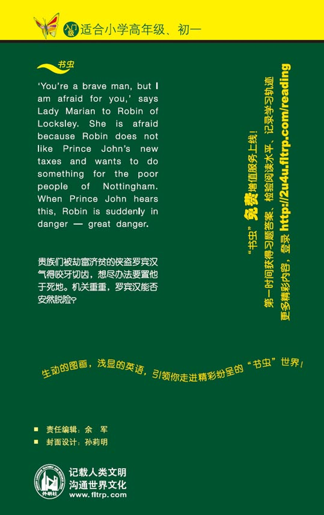